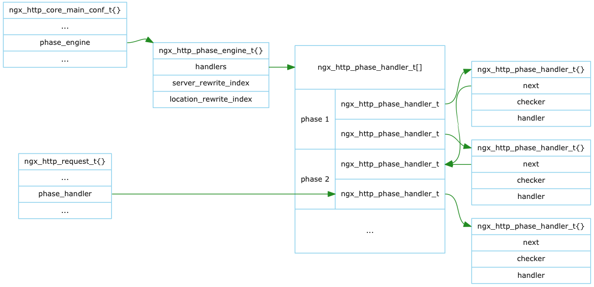

Nginx对Request的处理划分为10个阶段(Phase)。
各个HTTP Phase Handler类型的模块在postconfiguration回调函数中向各阶段注册回调函数来实现模块功能。 注册完成后如下图的phases所管理二维数组所示：
Nginx遍历此二维数组，即可完成请求处理。但为了达到更佳的性能，由phase_engine重新组织了二维数组。
遍历一维数组优于遍历二维数组。ngx_http_init_phase_handlers()将二维数组归并为一个一维数组，并用next指示出下一阶段开始的index。

Nginx依次调用此一维数组的回调函数，当所属的阶段需结束处理，则通过next找到下一阶段的回调函数继续处理。 ngx_http_request_t的phase_handler是此一维数组的index，表示正在处理的回调函数。 当资源没有就绪时，遍历过程暂时停止，一旦就绪，在事件回调函数中从phase_handler所指的位置继续遍历。
由函数ngx_http_core_run_phases()遍历并调用回调处理函数。下表是关于回调函数返回值的处理方法小结：
| Phase | 下一回调 | 下一阶段 | 暂时停止 | 结束遍历 |
| POST_READ | NGX_DECLINED | NGX_OK | NGX_AGAIN, NGX_DONE | ERRORS |
| SERVER_REWRITE | NGX_DECLINED | -- | -- | ERRORS |
| FIND_CONFIG | -- | -- | -- | -- |
| REWRITE | NGX_DECLINED | -- | -- | ERRORS |
| POST_REWRITE | -- | -- | -- | -- |
| PREACCESS | NGX_DECLINED | NGX_OK | NGX_AGAIN, NGX_DONE | ERRORS |
| ACCESS | NGX_DECLINED if satisfy_all NGX_OK |
if satisfy_any NGX_OK | NGX_AGAIN, NGX_DONE | ERRORS |
| POST_ACCESS | -- | -- | -- | -- |
| TRY_FILES | -- | -- | -- | -- |
| CONTENT | NGX_DECLINED | -- | -- | NOT NGX_DECLINED |